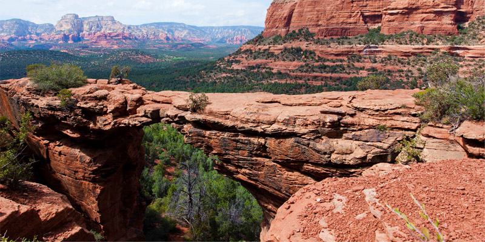

Городок «Седона»
Седона - небольшой городок в Аризоне, заслуживающий большего!
Рассмотрим 5 причин, по которым Седона круче, чем Гранд Каньон!
Первое преимущество
Настоящий городок
-№1-
Седона - не аттракцион для туристов, там течет своя жизнь

Подробнее о первом преимуществе
Жилье
Рекомендуем пожить в настоящем мотеле, все как в кино!
Еда
Всегда заказывайте фирменный бургер, вы не разочаруетесь!
Cувениры
Не только китайского, но и местного производства!
Второе преимущество

Там есть мост дьявола
-№2-
Да, по нему можно пройти! Если конечно вы осмелитесь
Третье, четвертое и пятое преимущество
Небольшая площадь
-№3-
Все достопримечательности находятся очень близко
Красивая дорога
-№4-
Ехать в седону из Лас-Вегаса совсем не скучно!
Мало туристов
-№5-
Большинство едет в Гранд Каньон и толпится там
Поиск гостиницы
Заинтересовались?
Укажите предполагаемые даты поездки, и мы покажем вам лучшие предложения гостиниц в Седоне
Поиск гостиницы в Седоне